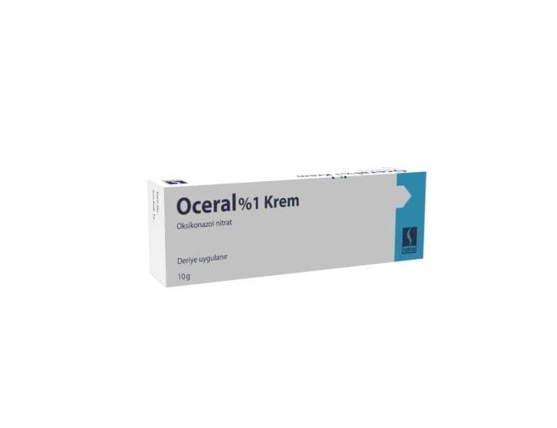

<!DOCTYPE html><html lang="tr"><head><meta charset="utf-8"><meta name="viewport" content="width=device-width,initial-scale=1"><meta name="referrer" content="strict-origin-when-cross-origin"><title>Oceral %1 Krem, 10 g – Kullanma Talimatı | İlaç Pro</title><meta name="description" content="OCERAL 10 g aluminyum tüp içerisinde beyaz veya açık sarı renkli, homojen görünülü, opak bir kremdir. OCERAL…"><link rel="canonical" href="https://mustafayalvac244-tech.github.io/ilacpro-veri/ilac/8699511350241.html"><meta property="og:type" content="article"><meta property="og:locale" content="tr_TR"><meta property="og:title" content="Oceral %1 Krem, 10 g – Kullanma Talimatı"><meta property="og:description" content="OCERAL 10 g aluminyum tüp içerisinde beyaz veya açık sarı renkli, homojen görünülü, opak bir kremdir. OCERAL…"><meta property="og:image" content="https://mustafayalvac244-tech.github.io/ilacpro-veri/gorsel/8699511350241.jpg"><meta property="og:image:width" content="692"><meta property="og:image:height" content="532"><meta property="og:image:type" content="image/jpeg"><meta property="og:url" content="https://mustafayalvac244-tech.github.io/ilacpro-veri/ilac/8699511350241.html"><link rel="stylesheet" href="_sayfa.css"></head><body data-id="419defb5fbd1"><main><header>İlaç Pro · Kullanma Talimatı (TİTCK)</header><h1>Oceral %1 Krem, 10 g</h1><figure></figure><section id="nedir"><div class="bas"><h2>Ne için kullanılır</h2><small>KT · Bölüm 1</small></div><p>OCERAL 10 g aluminyum tüp içerisinde beyaz veya açık sarı renkli, homojen görünülü, opak bir kremdir. OCERAL oksikonazol etkin maddesi içermektedir. Oksikonazol, mantar hücrelerinin çevresini olu turan zarın oluumunda önemli olan ergosterol adı verilen maddenin sentezini engelleyerek etki göstermektedir. OCERAL, topikal antifungal bir ilaçtır. Derinizde mantar üremesini önler. OCERAL mantar enfeksiyonlarının bulunduğu ekstremitelere, vücut, baın saçlı kısımları ve dı  genital organlara ve kıvrımlı cilt bölgelerine uygulanabilir.</p></section><div id="kt"></div></main><footer><p>Kaynak: <a id="pdf" href="https://titck.gov.tr/storage/kubKtAttachments/f11eba3522071.pdf" rel="noopener">TİTCK Kullanma Talimatı</a> · onay 09.09.2014</p><p>Bu sayfa yorum içermez; metin Kullanma Talimatı'ndan olduğu gibi alınmıştır.</p><p>İlaç Pro tıbbi tavsiye vermez, tanı koymaz, doz önermez ve bir tıbbi cihaz değildir. Kullanma Talimatı metinleri TİTCK'dan olduğu gibi aktarılır. İlaç kullanımıyla ilgili kararlar için doktorunuza veya eczacınıza danışın.</p></footer><nav><a class="btn b1" id="ac" href="ilacpro://ilac/8699511350241">Uygulamada aç</a><a class="btn b2" id="indir" href="../indir/">İlaç Pro'yu indir</a></nav><script src="_sayfa.js" defer></script></body></html>